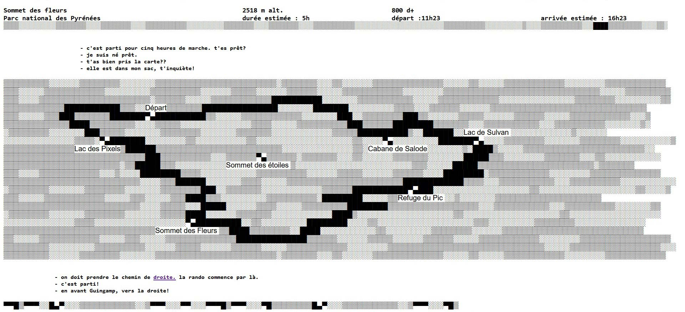
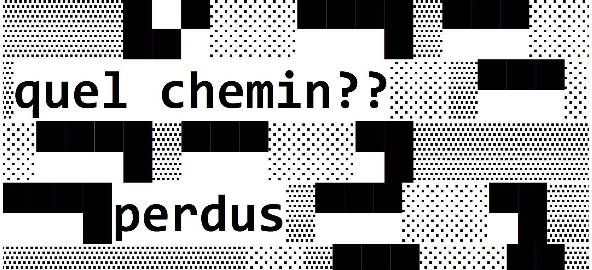
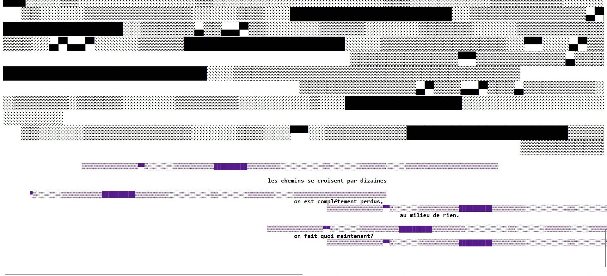
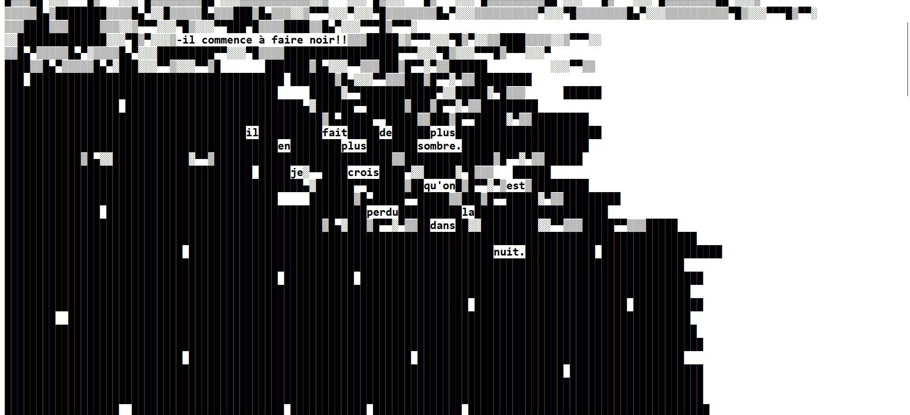
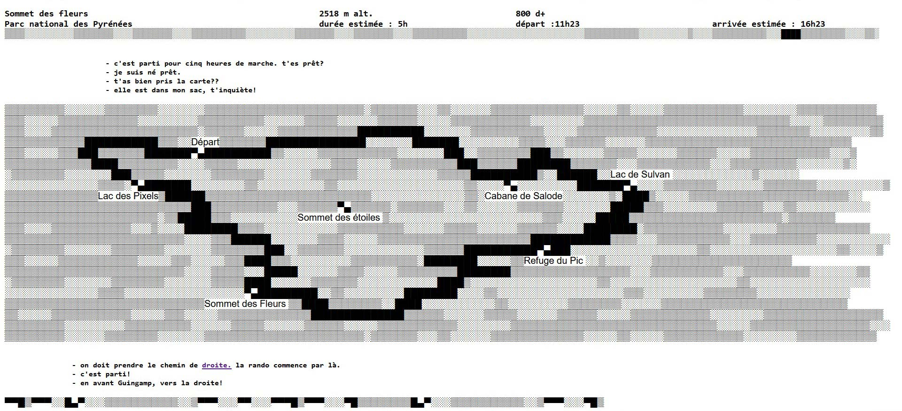
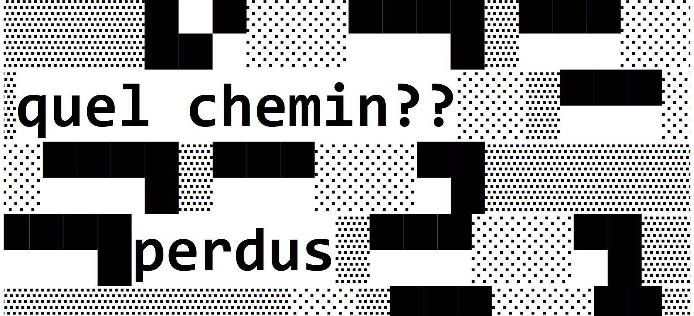
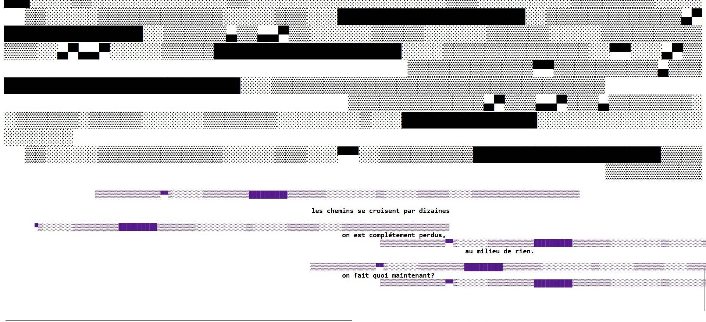
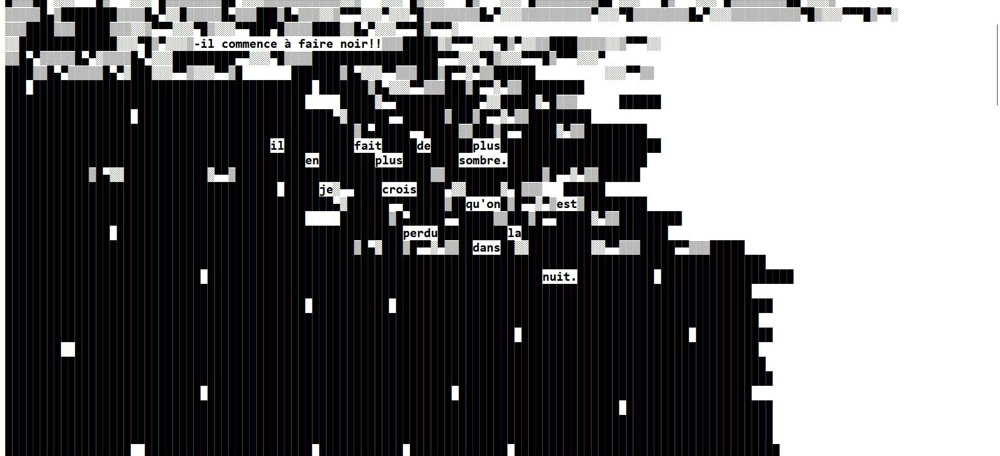

DUS-PERscroll and clique (stp)
(2022)
micro-siteprogrammationcodage 100% html
Le projet Scroll and clique stp consiste à concevoir un micro-site narratif sous forme fanzinesque et/ou manifestesque, en contournant et utilisant les limitations techniques et esthétiques du HTML. Ce micro-site propose aux lecteurs de suivre l’histoire de deux randonneurs. Ceux-ci se perdent et tentent de retrouver leur chemin à mesure que les scroll et les cliques s’enchaînent. De page en page, on s’immerge et se perd dans ce paysage de pixels. █▀▄░░ CLIQUEZ ICI POUR VOUS BALADER Ou regardez la VIDÉO YOUTUBE █▀▄░░
 






